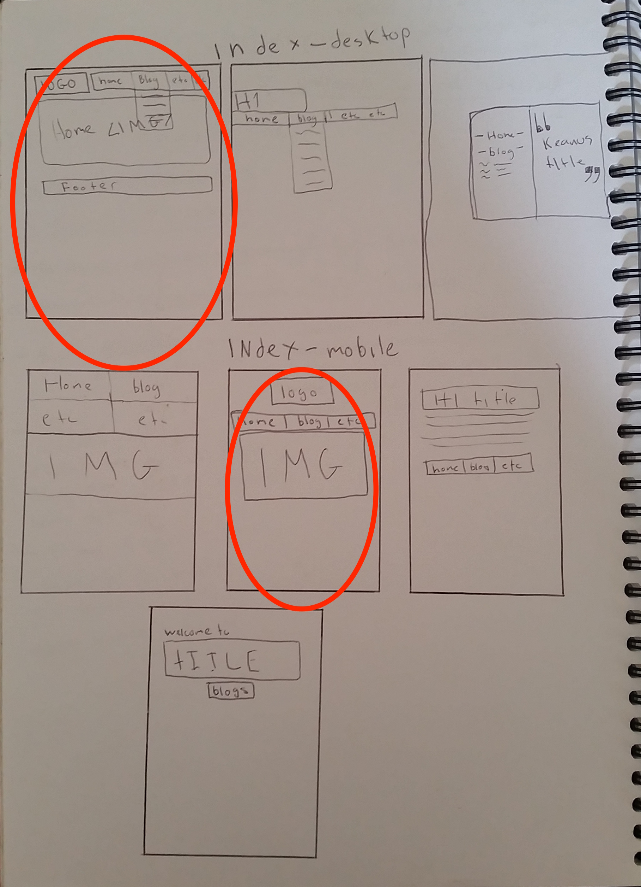
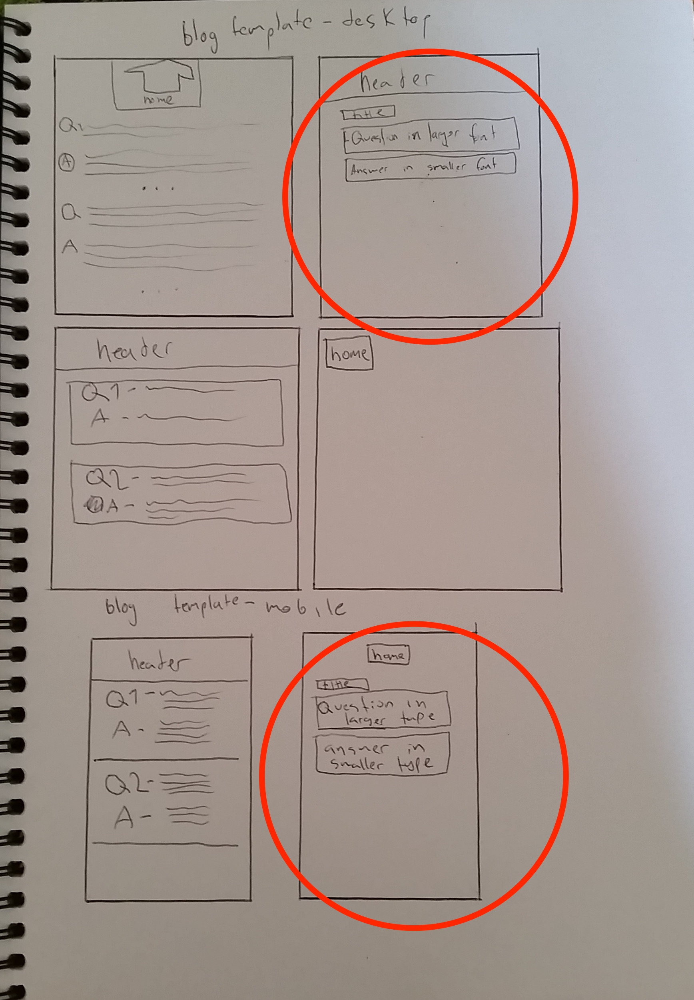

What is a responsive site, and why is it important??
A responsive website is a website that is capable of being viewed easily on both desktop abd mobile, big and small screens. It's very important recently as more and more people are browsing the web through mobile devices, meaning that if you want to get your message across/sell your product/etc
Why is mobile first design important?
Web sites are often designed from mobile first because more users brose the web using tablets/mobile devices.
Another reason is that while designing the wireframes, it is easier to include just the essential elements, and expand upon that to include all desired elements on the larger desktop view.
What are frameworks, and what are the pros and cons of using them??
CSS Frameworks are a set of pre-written css selectors that you can use to easily include responsive design in a 12-grid layout. Most frameworks require you to add a class to elements to define how much space they take up.
What are wireframes?
Wireframes are simple sketches of your web-pages, often drawn or created in a program, that allow you to plan the placement of your elements. Personally i usually draw lots of wireframes and pick one that is my favourite, before doing a proper 12-grid-mockup.


What was the hardest element to implement?
The hardest element to implement was the horizontal menu, and making the hover efect fit perfectly on top of the existing black background. It was also hard to initially figure out how skeleton framework worked, but after playing with the template and reading the documentation through it was easy.